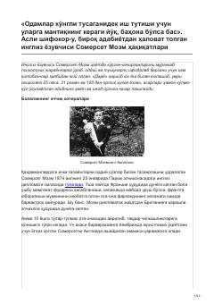

SMMashhur ingliz yozuvchisi Somerset Moemning hayot yo'li va ijodiy merosi haqida biografik ocherk.
Ushbu asar mashhur ingliz yozuvchisi Somerset Moemning hayot va ijod yo'liga bag'ishlangan. Kitobda adibning bolalikdagi qiyinchiliklari, shifokorlik tajribasi, josuslik faoliyati va uning jahon adabiyotiga qo'shgan hissasi haqida so'z boradi.